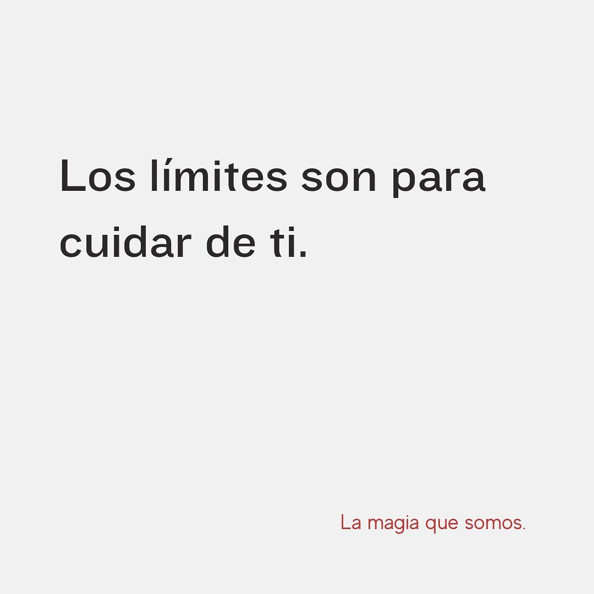

Limites saludables
Publicado el 31 de octubre de 2025
Decir que no me costaba muchísimo. Sentía culpa, miedo de quedar mal, o pensaba que tenía que decir que sí a todo.
Con el tiempo entendí que poner límites no es rechazar a los demás, sino elegir cuidarme. Empecé a notar que cada vez que decía que sí por compromiso, me decía que no a mí misma. Me agotaba, me frustraba, y me sentía desconectada de lo que realmente necesitaba.
Pero descubrí que los vínculos que valen se fortalecen cuando hay honestidad. Y que respetarme no me hace menos generosa, sino más auténtica. Hoy sé que los límites son una forma de amor propio. Son una manera de decir: “esto sí, esto no, esto tal vez, pero con respeto”. Y desde ahí, puedo estar para los demás sin dejarme de lado.
Pero... ¿como aprender a establecer limites saludables? Te comparto algunos tips que a mi me sirvieron:
- Escuchá tu incomodidad: si algo te molesta, te agota o te hace sentir invadida, es una señal de que ahí podría ir un límite.
- Empezá por lo simple: frases como “ahora no puedo”, “necesito pensarlo” o “prefiero no hacerlo” son formas amables de marcar tu espacio.
- No te sobreexpliques, no tienes que justificar cada decisión que hagas.
Te invito a que te tomes un tiempo para que pienses que cosas te gustan y que cosas, no, asi puedes conocerte mejor y puedes establecer tus limites.